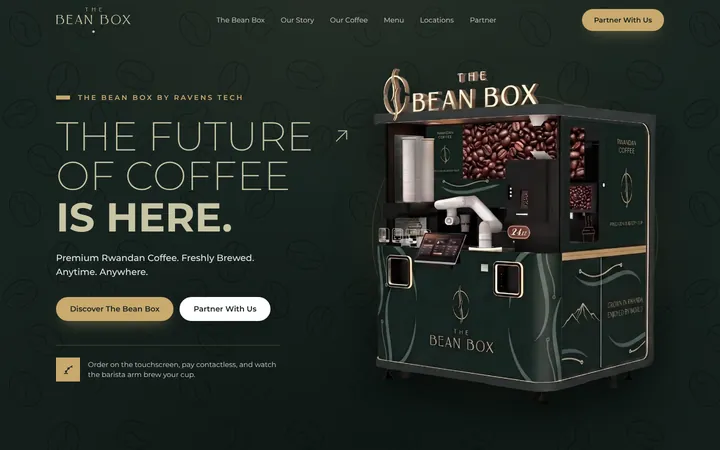
Senior Data Scientist · Web & Product Builder
I turn data and design into products people trust.
A senior data scientist in insurance who also builds brand-led websites and apps: machine learning for pricing, fraud and claims, and digital products that turn visitors into partners.
Selected work
Four projects, four very different moods.
Case study 01
The Bean Box
"Make it feel like a luxury coffee brand, not a vending machine company." That one-line brief shaped every decision.
- Client
- Ravens Tech
- Role
- Website design & build
- Brand guideline
- Christelle
- Pages
- Home, Our Story, Privacy
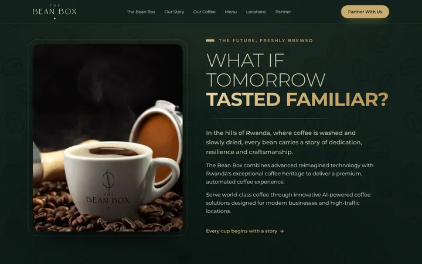
The challenge
An automated coffee kiosk can easily look like a vending machine. The site had to feel premium, tell the story of Rwandan coffee and the women who grow it, and still work hard as a sales tool for partners.
The approach
My first version was dark and gold: elegant, but generic. Then Christelle's brand guideline arrived and gave the site a real identity, so I rebuilt it around that guideline: forest green and sage, the Montserrat typeface and the real logo.
Key decisions
- 01The machine comes first. The hero sits on the kiosk's own green, over a hand-drawn coffee-bean pattern, with gold accents for luxury.
- 02Pages like a brand book. Dark and light sections alternate, just like the guideline pages.
- 03Moments, not machines. We removed "robotic" from the copy: "We didn't reinvent coffee. We reinvented the moment."
- 04The origin is the heart. A dedicated Story page follows the coffee from the hills of Rwanda to the cup.
- 05Built to do business. Each partnership programme leads straight to the inquiry form, with the right option already selected.
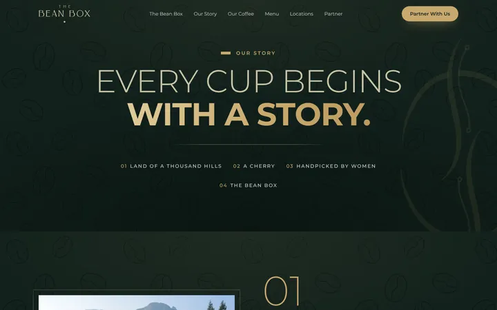
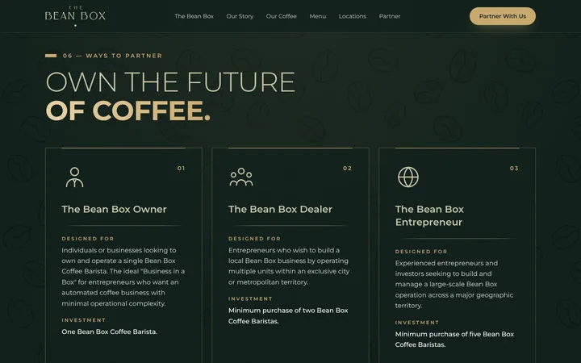
- 97Lighthouse performance (mobile)
- 100Accessibility, best practices & SEO
- 0Accessibility issues found by automated checks
- 375–1440pxTested from phone to desktop
Case study 02
Frosti
Where The Bean Box is calm and luxurious, Frosti is pure joy: one signature flavor, a golden smile, and a little show in every cup.
- Client
- Ravens Tech
- Role
- Website design & build
- Product
- Soft-serve ice cream station
- Pages
- Home, Our Story
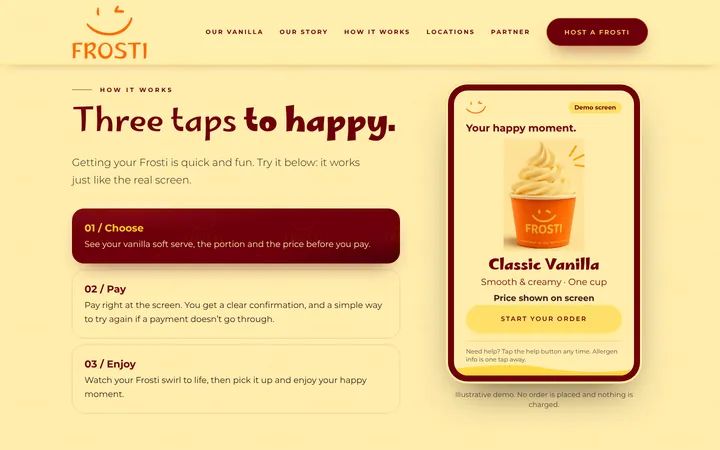
The idea
Ice cream is about happiness, so the brand smiles back: butter yellow, bright orange and deep berry, a rounded display typeface and a smile that appears on the cup, the lid and even the wooden spoon.
The standout feature
"Three taps to happy." Visitors can try the ordering screen right on the website: choose, pay and collect, just like the real station, as an illustrative demo with nothing charged.
Key decisions
- 01One flavor, all smiles. Classic Vanilla is the hero, so the site stays focused.
- 02Quality you can trace. The story of its Belgian ice cream base, made with fresh cream.
- 03Try before you buy. An interactive demo of the touchscreen explains the experience better than words.
- 04A sister brand. It shares The Bean Box's structure (story page, venues, partner programmes) but has its own personality.
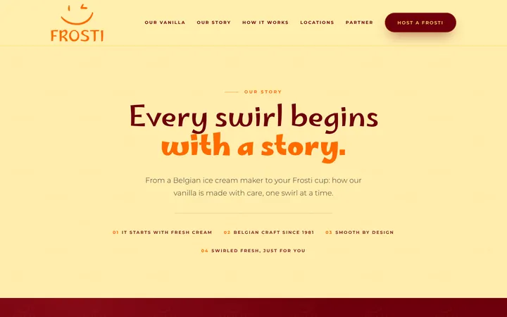
Case study 03
Icyizere
Icyizere means "trust" in Kinyarwanda. Every rental becomes a signed, photographed, verifiable record, so owners can hand over their keys with confidence.
- Type
- Mobile app prototype
- Role
- Product design & prototype
- For
- Car and house owners in Rwanda
- Status
- Interactive prototype
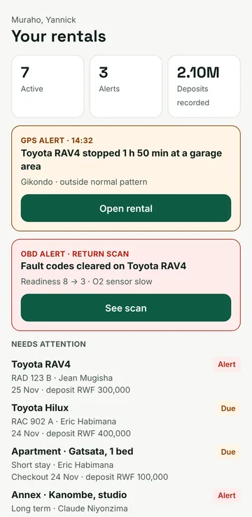
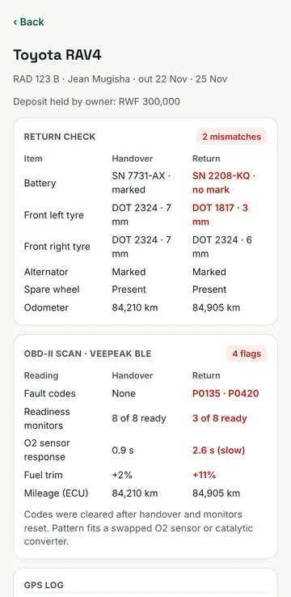
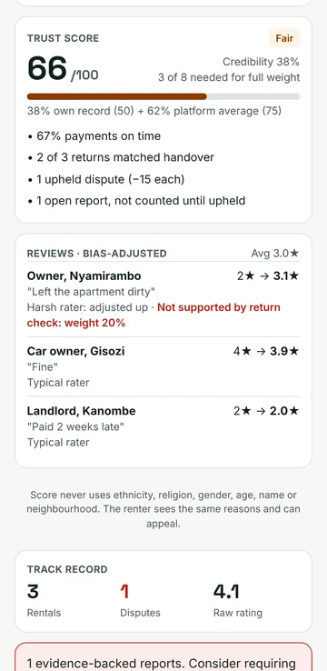
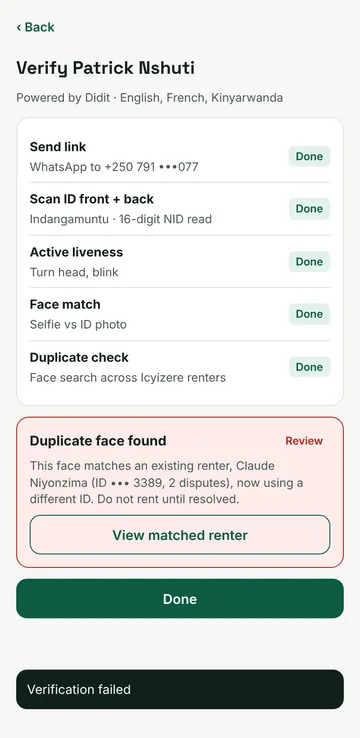
The problem
Owners who rent out cars and houses carry real risk: renters with false IDs, swapped parts, unpaid rent and disputes with no proof. Trust usually depends on word of mouth.
The idea
Treat every rental like a handover receipt. Verify the renter, record the condition going out and coming back, and keep every payment, rule and warning in one place that both sides can see.
Key decisions
- 01Verify before the keys. The renter scans their own ID, completes a liveness check and a face match, and a duplicate-face check catches known bad renters using a new ID.
- 02Proof, not opinions. Cars get handover and return checks, OBD-II scans and a GPS log; houses get room-by-room inspections, meter readings and rent records.
- 03A fair trust score. New renters start at the platform average instead of being penalised, reviews are adjusted for harsh or generous raters, and unsupported claims count less.
- 04Transparent by design. The score never uses ethnicity, religion, gender, age, name or neighbourhood, and renters see the same reasons and can appeal.
- 05Fair escalation. Rule breaks follow a clear ladder (notice, written warning, final notice) with evidence, and serious cases produce an evidence pack for the authorities.
Case study 04
Shanana Coffee
"Every sip tells a story." A wholesale website that introduces a single-origin coffee from Nyaruguru, Rwanda to American buyers through its place, its flavor and its people.
- Type
- Wholesale website
- Role
- Website design & build
- Origin
- Nyaruguru, Rwanda
- Audience
- U.S. cafés, retailers & distributors
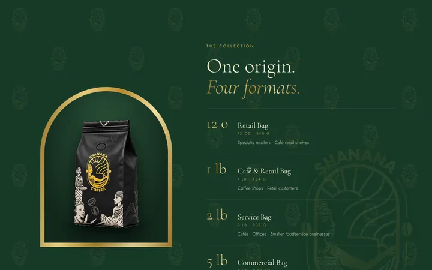
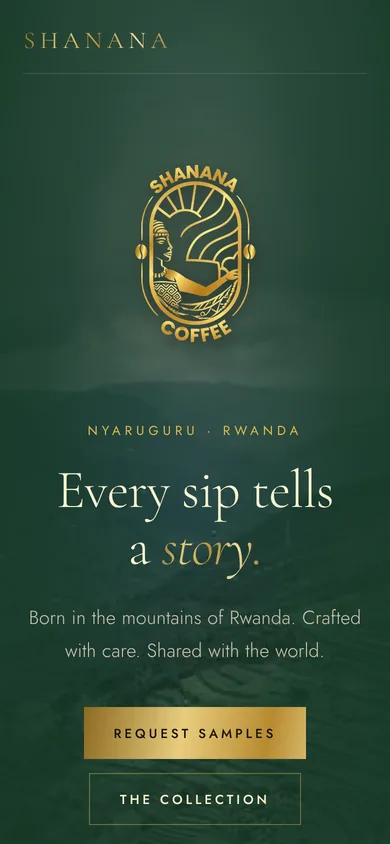
The brief
Shanana is entering the U.S. market and needed a site a buyer can take in within minutes: where the coffee comes from, how it tastes, what sizes it comes in, and how to start a wholesale conversation.
The approach
Hushed luxury, built from the brand's own emblem. Its gold arch frames the coffee bag, the impact cards and the inquiry form, on deep green and soft yellow with the emblem watermarked behind each section.
Key decisions
- 01Story first. The gold emblem over the misty hills of Nyaruguru and "Every sip tells a story" set the mood before any detail.
- 02Facts at a glance. Country, region, variety, altitude and process in one row, with tasting notes written as top notes, heart and base.
- 03One origin, four formats. 12 oz, 1 lb, 2 lb and 5 lb bags, each matched to the buyer it is for.
- 04Honest impact. Commitments are stated as intentions, with impact figures published only once they can be verified.
- 05An inquiry that writes itself. Buyers pick their business type and bag sizes, and the form prepares a ready-to-send wholesale email.
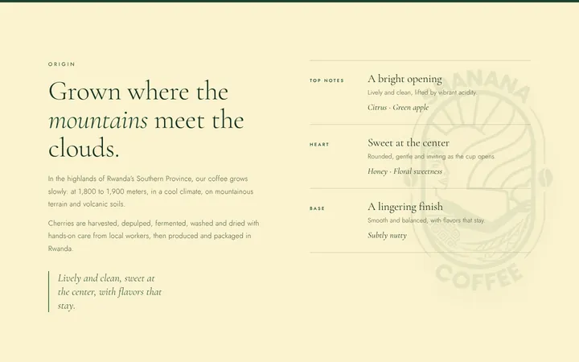
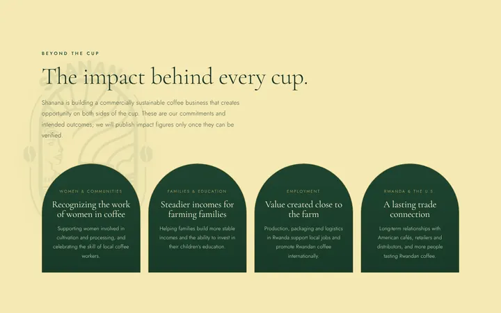
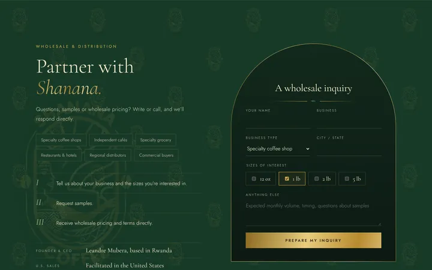
Data science · Insurance
Machine learning, explained simply.
As a senior data scientist in insurance, I use machine learning across the whole business: pricing, underwriting, claims, fraud and customers. This short explainer walks through the toolkit, each method a small step from the one before.
The insurance data scientist's toolkit
- 01Linear regressionClaim severity
- 02Logistic regressionClaim frequency & lapse
- 03Decision treeUnderwriting rules
- 04Random forestFraud detection
- 05Gradient boostingPricing
- 06k-nearest neighboursClaims triage
- 07k-meansCustomer segments
- 08Neural networkTelematics & photo damage
- 09Large language modelClaim notes & documents
How I work
From one-line brief to live site.
- 01
Brief
Find the one sentence that every decision answers to.
- 02
Brand
Work from the brand guideline: colours, type, logo and tone.
- 03
Story
Shape the words and the page flow around the people and the product.
- 04
Build
Responsive, fast, accessible pages that are easy to update.
- 05
Test
Phone to desktop, accessibility and performance checks.
- 06
Launch
Hosted on Cloudflare, so every update goes live automatically.
- Machine learning
- Insurance analytics
- Predictive modelling
- Brand-led web design
- Product & UX design
- Prototyping
- Responsive layout
- Accessibility (WCAG AA)
- Performance
- Copy & storytelling
- React
- Vite
- Tailwind CSS
- Cloudflare Pages
Contact
Have a brand with a story to tell?
I'd love to hear about it.